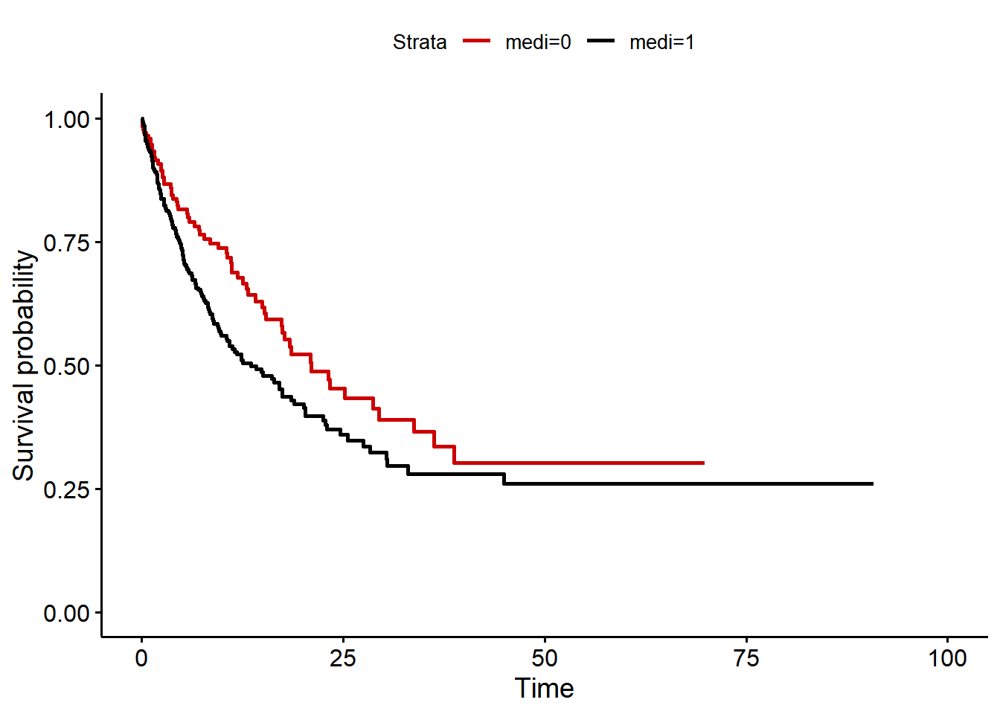

# Required packages
library(tidyverse)
library(survey)
library(survival)
library(gtsummary)
library(survminer)Adjusted survival curves
Warning
This page is under development. Changes should be expected.
Background
Unadjusted Kaplan-Meier curves from observational data might be biased because of confounding (Cole and Hernán (2004)). This vignette introduces the concept of inverse probability (IP) weighted survival curves.
Example
We consider a study population of 500 patients who received a medication. 60% of the patients were women. In men, a specific enzyme was measured with a probability of 30%, whereas in women have a 5 times higher chance of having the enzyme. Those with the enzyme were more likely to receive the medication (with a probability of 75%), compared to those without the enzyme (probability of 50%).
- Research question: What is the effect of the medication on death?
- Study design: Cohort study
- Outcome of interest: Time to death or end of follow-up
- Predictor of interest: Medication
- Confounders: Sex, enzyme
The used variables from the data are:
| Variable | Definition | Coding |
|---|---|---|
| female | Sex | 1=Women, 0=Men |
| enzyme | Measured enzyme | 1=Present, 0=Not present |
| medi | Medication | 1=Received, 0=Not received |
| death | Death | 1=Death, 0=Alive |
| fup | Follow-up time | Non-negative number |
Knowledge from the crystal ball
Because we simulated the data, we know that medication has no effect on mortality.
Analysis strategy
IP weighting constructs weights which are equal to the probability of an individual’s treatment (here: receiving the medication) given observed covariates (here: sex and enzyme) and creates pseudopopulations in which observed covariates are independent of treatment (i.e. no confounding) (Hernán and Robins (2022)).
Descriptive table
The table below shows a descriptive summary of the study population, by medication.
data %>%
tbl_summary(by = medi) | Characteristic | 0, N = 1721 | 1, N = 3281 |
|---|---|---|
| fup | 8 (3, 17) | 6 (3, 14) |
| death | 65 (38%) | 156 (48%) |
| enzyme | 64 (37%) | 199 (61%) |
| female | 102 (59%) | 210 (64%) |
| 1 Median (IQR); n (%) | ||
Unadjusted Kaplan-Meier curve and Cox-modelling
A naive (unadjusted) survival analysis of the data reveals the following Kaplan-Meier plot. We conclude that the medication has an effect on survival.
mod <- survfit(Surv(fup, death) ~ medi, data = data)
ggsurvplot(mod, data = data, palette = c("#CC0000", "black"), censor = FALSE)
mod_cox_unadjusted <- coxph(Surv(fup, death) ~ medi, data = data)
mod_cox_unadjustedCall:
coxph(formula = Surv(fup, death) ~ medi, data = data)
coef exp(coef) se(coef) z p
medi 0.3345 1.3973 0.1479 2.262 0.0237
Likelihood ratio test=5.34 on 1 df, p=0.0209
n= 500, number of events= 221 An unadjusted Cox proportional hazard model shows that patients with medication have 1.4 higher hazard of death compared to those without medication.
mod_cox_adjusted <- coxph(Surv(fup, death) ~ medi + enzyme + female, data = data)
mod_cox_adjustedCall:
coxph(formula = Surv(fup, death) ~ medi + enzyme + female, data = data)
coef exp(coef) se(coef) z p
medi 0.01920 1.01938 0.14993 0.128 0.898
enzyme 2.12737 8.39280 0.20308 10.475 <2e-16
female -0.03787 0.96284 0.16500 -0.230 0.818
Likelihood ratio test=179.2 on 3 df, p=< 2.2e-16
n= 500, number of events= 221 What happens if we adjust for enzym and sex? Then the effect of the medication on death vanishes (hazard ratio=1.02).
IPW modelling
An IPW modelling approach constructs treatment weights (here medication) given known covariates (here sex and enzyme) using a logistic regression model.
# IPW denominator
mod <- glm(medi ~ female + enzyme, data = data, family = binomial())
data$ipw <- NA
# Probabilty of treatment
data$ipw <- predict(mod, data = data, type = "response")
# Probabilty of non-treatment
data$ipw[data$medi==0] <- 1 - predict(mod, data = data, type = "response")[data$medi == 0]We construct stabilized weights, since they can provide narrower confidence intervals (Hernán and Robins (2022)).
# Stabilized weights
mod0 <- glm(medi ~ 1, data = data, family = binomial())
data$ipw0 <- predict(mod0, data = data, type = "response")
data$ipw0[data$medi == 0] <- 1 - predict(mod0, data = data, type = "response")[data$medi == 0]
data$ipw <- data$ipw0 / data$ipwAn IPW adjusted Kaplan-Meier curve reveals that medication has no effect on survival:
# Set survey design
svy_design <- svydesign(id = ~1, weights = ~ipw, data = data)
# IPW adjusted Kaplan-Meier
km_fit <- svykm(Surv(fup, death) ~ medi, design = svy_design)
km_df <- data.frame(time = km_fit$`1`$time, surv = km_fit$`1`$surv, strata = "medi=1")
km_df <- bind_rows(km_df, data.frame(time=km_fit$`0`$time, surv=km_fit$`0`$surv, strata = "medi=0"))
ggsurvplot_df(km_df, palette = c("#CC0000", "black"), censor=FALSE)
mod_cox_ipw_adjusted <- svycoxph(Surv(fup, death) ~ medi, design = svy_design)
summary(mod_cox_ipw_adjusted)Independent Sampling design (with replacement)
svydesign(id = ~1, weights = ~ipw, data = data)Call:
svycoxph(formula = Surv(fup, death) ~ medi, design = svy_design)
n= 500, number of events= 221
coef exp(coef) se(coef) robust se z Pr(>|z|)
medi -0.04057 0.96024 0.14165 0.14255 -0.285 0.776
exp(coef) exp(-coef) lower .95 upper .95
medi 0.9602 1.041 0.7262 1.27
Concordance= 0.494 (se = 0.019 )
Likelihood ratio test= NA on 1 df, p=NA
Wald test = 0.08 on 1 df, p=0.8
Score (logrank) test = NA on 1 df, p=NA
(Note: the likelihood ratio and score tests assume independence of
observations within a cluster, the Wald and robust score tests do not).This is confirmed by an IPW adjusted Cox regression model (hazard ratio=0.96).
Conclusion
Unadjusted Kaplan-Meier curves from observational data might be biased because of confounding. IPW adjusted survival curves account for confounding by constructing weights which are proportional to the probability of treatment given known covariates. An advantage of IPW adjusted Kaplan-Meier curves is that they provide marginal survival estimates, in contrast to stratified plots (Cole and Hernán (2004)).
Data simulation
set.seed(1)
n <- 500
# 60% percent women
female <- rbinom(n, 1, 0.6)
# Men has the enzyme with a prob of 0.3; women have
# a 5 times higher chance of having the enzym
enzyme <- ifelse(runif(n) < plogis(qlogis(0.3) + log(5) * female), 1, 0)
# Those with enzyme receive medication with prob 0.75
medi <- ifelse(runif(n) < plogis(log(3) * enzyme), 1, 0)
# Hazard of dying: HR=10 of those with enzyme; No effect for medication
haz <- 0.01 * exp(log(10) * enzyme)
# Time to death
time_to_death <- -log(runif(n)) / haz
# Censoring time: Mean duration 20 days
censored <- rweibull(n, 1, 20)
# Follow-up time
fup <- pmin(time_to_death, censored)
# Death
death <- ifelse(time_to_death <= censored, 1, 0)
# Data
data <- data.frame(fup, death, medi, enzyme, female)References
Cole, Stephen R., and Miguel A. Hernán. 2004. “Adjusted Survival Curves with Inverse Probability Weights.” Computer Methods and Programs in Biomedicine 75 (1): 45–49. https://doi.org/10.1016/j.cmpb.2003.10.004.
Hernán, MA, and JM Robins. 2022. Causal Inference: What If. Boca Raton: Chapman & Hall/CRC.